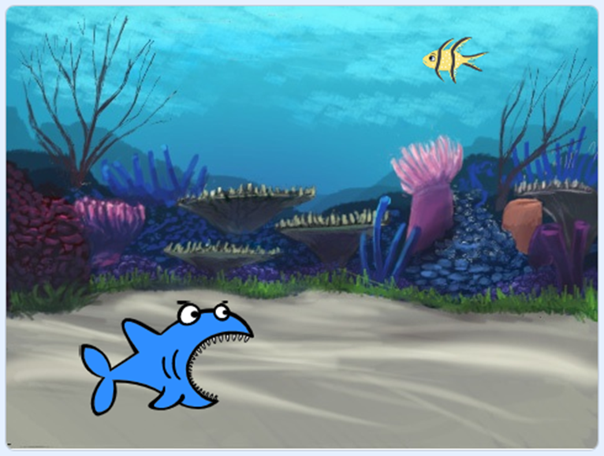
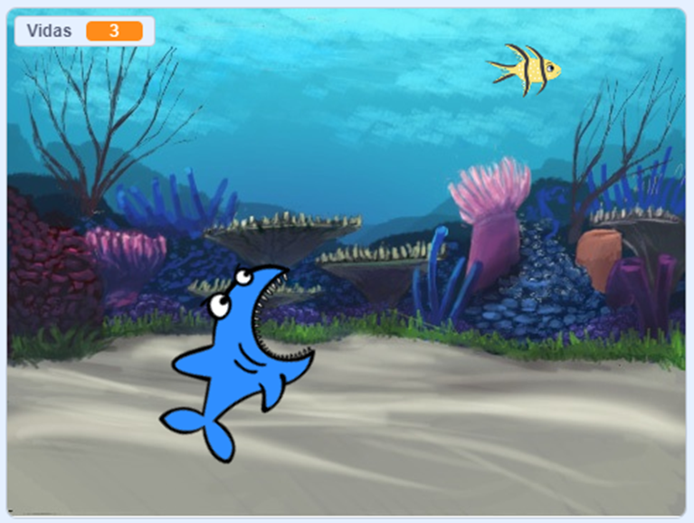
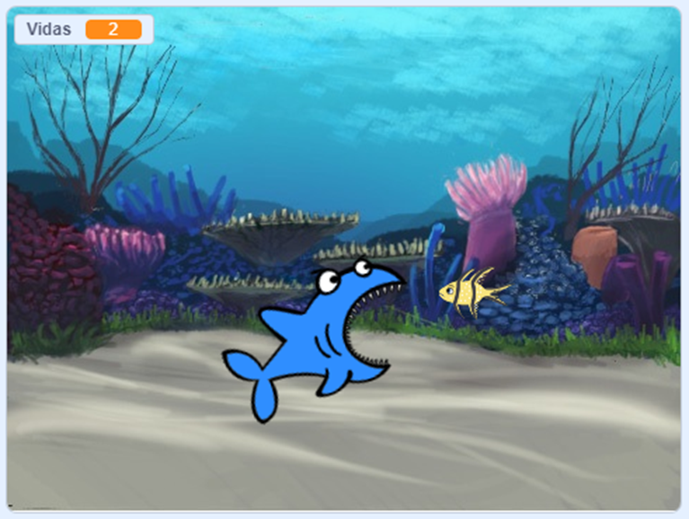
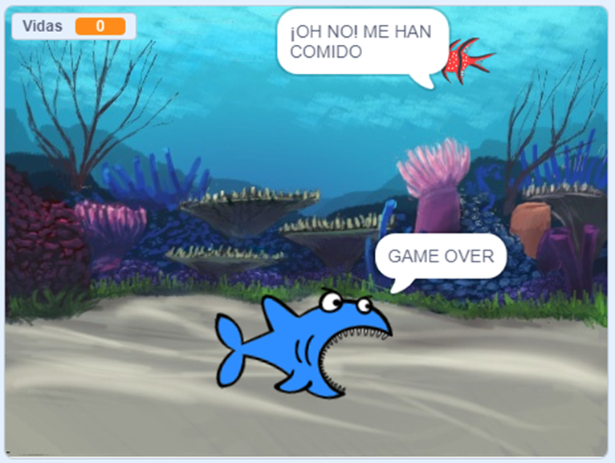
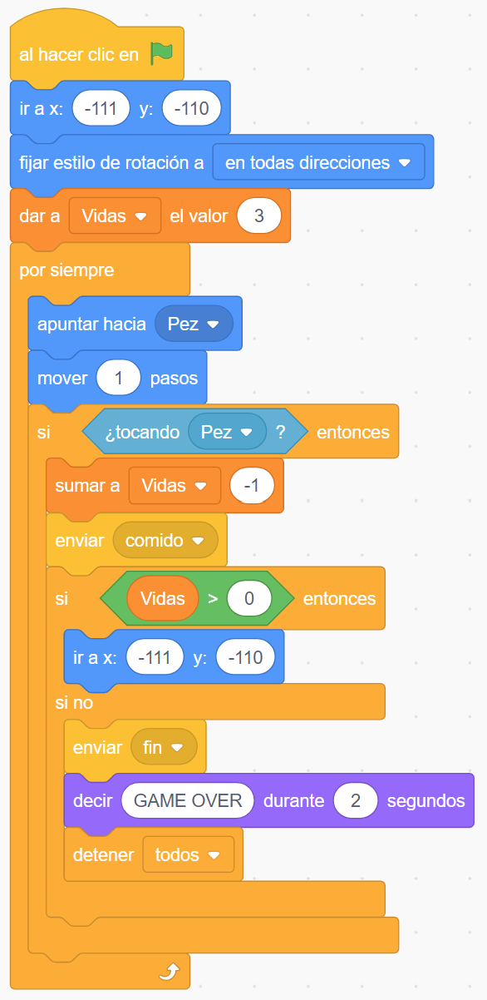

TAREA 3: El pescaíto
En esta práctica vamos a introducir bastantes novedades. Por un lado, vamos a aprender a crear nuestros propios EVENTOS a través del envío y recepción de mensajes, y además vamos a comenzar a trabajar el uso de variables.
Para ello, vamos a crear un juego en el que tendremos dos objetos: un pez pequeño y un tiburón (del cual escogeremos su disfraz con la boca abierta). El fin del juego es que el tiburón va a perseguir al pez para comérselo y nosotros deberemos mover el pez con las flechas de movimiento para evitar ser cazados. Además, tendremos 3 vidas antes de que el juego termine.
Vamos a dar unos pasos para el desarrollo de este juego:
PASO 1. Creamos los objetos y les ponemos un fondo adecuado. Recordad que el tiburón debe tener el disfraz de la boca abierta y reduce el tamaño del pez a una talla adecuada.

PASO 2. Al tocar bandera tanto el pez como el tiburón deberán colocarse en extremos opuestos de la pantalla (función de movimiento IR A). Además, deberemos establecer el estilo de rotación del pez a izquierda-derecha y el del tiburón a en todas direcciones.
PASO 3. Le damos funcionalidad de movimiento al pez con las teclas de movimiento (arriba, abajo, izquierda y derecha).
PASO 4. Al inicio del evento bandera del tiburón, además de colocarlo en un extremo (como se ha indicado anteriormente), inicializaremos la variable Vidas a 3 mediante la función DAR A Vidas EL VALOR 3. La variable Vidas habrá debido ser creada previamente.

PASO 5. El tiburón, después de inicializar su posición y la variable Vidas, entrará en un bucle infinito donde perseguirá lentamente (MOVER 1 paso) al pez de forma autómata (APUNTAR HACIA). Después de cada movimiento (MOVER 1 paso) comprobaremos si está tocando al pez, y si es así realizaremos lo siguiente:
- Disminuimos las vidas en 1 (SUMAR A Vidas -1).
- Enviamos el mensaje "comido" (que reciben el resto de objetos).
- Comprobamos si nos quedan más vidas:
- Si nos quedan más vidas, colocamos al tiburón en la posición inicial (IR A).
- Si no nos quedan vidas, enviamos el mensaje "fin" (que reciben el resto de objetos), el tiburón dirá GAME OVER y lanzaremos la función de control de DETENER TODOS.

PASO 6. Finalmente, debemos terminar la funcionalidad del pez. Para ello debemos utilizar los eventos "comido" y "fin" que ha creado el tiburón.
- Para el evento "comido" el pez simplemente volverá a su posición inicial.
- Para el evento "fin" el pez cambiará de color a rojo (podéis crear un disfraz para ello) y dirá ¡OH NO! ME HAN COMIDO.

Es posible que debáis añadir algún detallito para que el juego esté perfecto, así que ánimo y a por ello.
Añade instrucciones y créditos, y comparte el proyecto para que sea público.
Programación del objeto PEZ

Programación del objeto TIBURÓN